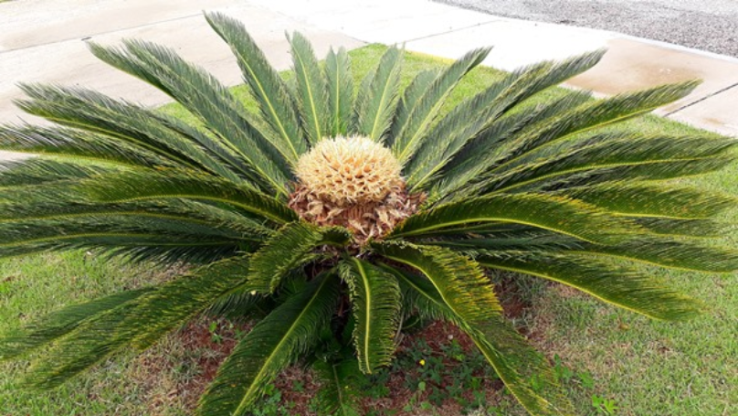
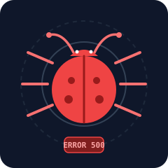

01
Versionamento Essencial
Aprender a base necessária para versionar um projeto com segurança, compreendendo o ciclo de vida dos arquivos e o histórico de alterações.
Aprender a base necessária para versionar um projeto com segurança, compreendendo o ciclo de vida dos arquivos e o histórico de alterações.
Saber como entregar e integrar o trabalho desenvolvido em equipe para outros colaboradores utilizando padrões consolidados da comunidade.
Você acabou de ser contratado e recebeu a máquina da empresa.
Um bug quebrou o ambiente de desenvolvimento. Sua missão é corrigi-lo sem travar o time.
Faça o Fork para ter sua própria versão do projeto nas nuvens.
Traga o código para a sua máquina local com o git clone.
Todo commit gravado no Git carrega o autor e o e-mail de quem fez a alteração.
Use --local para configurar apenas este projeto, ou
liste tudo com git config --list.

Evite versionar logs, dependências e credenciais sensíveis.
Revise as linhas alteradas antes de preparar qualquer arquivo.
Mova as correções validadas para a área de staging.
Escreva uma mensagem clara descrevendo o que foi resolvido.

repo
ghp_...)
O token substitui a senha da sua conta no terminal.
Pronto! Sua correção foi enviada para o seu fork remoto.